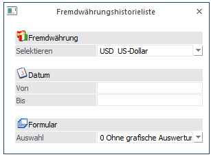
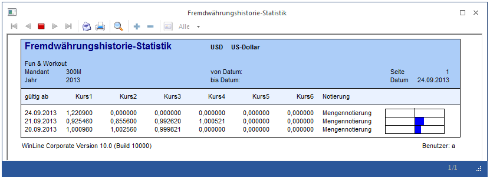

Die Fremdwährungshistorieliste kann über den Menüpunkt
1 Stammdaten
1 Mandantenstammdaten
1 Fremdwährungscode
durch Anklicken des Historieliste-Buttons geöffnet werden.
Hier kann eine Liste über alle Kurse einer Währung ausgegeben werden.

Zuerst wird aus der Auswahllistbox die Fremdwährung gewählt, die ausgewertet werden soll (EURO-Währungen machen hier nicht sehr viel Sinn, weil sich der Kurs ja nicht verändert).
In den Feldern
Ø Datum von
Ø Datum bis
kann eine Datumseinschränkung für die Auswahl getroffen werden.
Ø Formular
Aus der Auswahllistbox kann gewählt werden, in welcher Form die Ausgabe erfolgen soll. Dabei stehen folgende Optionen zur Verfügung:
ü 0 ohne grafische
Auswertung
Hier werden die einzelnen Kurse mit ihrem Gültigkeitsdatum
angezeigt.
ü 1 mit grafischer
Auswertung
Hier werden die einzelnen Kurse mit ihrem Gültigkeitsdatum
angezeigt, dazu wird aber die Abweichung zum aktuell gültigen Kurs mittels einer
Grafik dargestellt.
ü 2 nur Liniengrafik
Hier
wird anhand einer Liniengrafik die Kursentwicklung angezeigt.
Achtung
Sind in der Kurshistorie Einträge vorhanden, die unterschiedliche Notierungen aufweisen, wird der Kurs für die graphische Darstellung entsprechend umgerechnet.
Durch Drücken der F5-Taste wird die Auswertung gestartet, durch Drücken der ESC-Taste wird das Fenster geschlossen.
